Chapter9 Regression in the real world
9.1 Introduction
Although so far we have discussed the practicalities of fitting and interpreting regression models, in practical applications you want to first check your model and proceed from there. Not much point spending time interpreting your model until you know that the model reasonably fits your data.
In previous sessions we talked about the assumptions made by various statistical tests. The regression model also makes assumptions of its own. In fact, there are so many that we will spend an entire session discussing them. We follow for the most part Gelman and Hill (2007) discussion of these assumptions. These authors point out that the most important assumptions by decreasing order of importance are:
- Validity. The data should be appropriate for the question that you are trying to answer:
“Optimally, this means that the outcome measure should accurately reflect the phenomenon of interes, the model should include all relevant predictors, and the model should generalize to all cases to which it will be applied… Data used in empirical research rarely meet all (if any) of these criteria precisely. However, keeping these goals in mind can help you be precise about the types of questions you can and cannot answer reliably”
Additiviy and linearity. These are the most important mathematical assumptions of the model. We already talked about additivity in previous sessions and discussed how you can include interaction effects in your models if the additivity assumption is violated. We will discuss problems with non-linearities today as well as ways to diagnose and solve this problem. If the relationship is non linear (e.g, it is curvilinear) predicted values will be wrong in a biased manner, meaning that predicted values will systematically miss the true pattern of the mean of y (as related to the x-variables).
Independence of errors. Regression assumes that the errors from the prediciton line (or hyperplane) are independent. If there is dependency between the observations (you are assessing change across the same units, working with spatial units, or with units that are somehowed grouped such as students from the same class), you may have to use models that are more appropriate (e.g., multilevel models, spatial regression, etc.).
Equal variances of errors. When the variance of the residuals is unequal, you may need different estimation methods. This is, nonetheless, considered a minor issue. There is a small effect on the validity of t-test and F-test results, but generally regression inferences are robust with regard to the variance issue.
Normality of errors. The residuals should be normally distributed. Gelman and Hill (2007: 46) discuss this as the least important of the assumptions and in fact “do not recommend diagnostics of the normality of the regression residuals”. If the errors do not have a normal distribution, it usually is not particularly serious. Regression inferences tend to be robust with respect to normality (or nonnormality of the errors). In practice, the residuals may appear to be nonnormal when the wrong regression equation has been used. So, I will show you how to inspect normality of the residuals not because this is a problem on itself, but because it may be give you further evidence that there is some other problem with the model you are applying to your data.
Apart from this, it is convenient to diagnose multicollinearity (this affects interpretation) and influential observations.
So these are the assumptions of linear regression, and today we will go through how to test for them, and also what are some options that you can consider if you find that your model violates them. While finding that some of the assumptions are violated do not necessarily mean that you have to scrap your model, it is important to use these diagnostics to illustrate that you have considered what the possible issues with your model is, and if you find any serious issues that you address them.
We’ll be using the British Crime Survey daya from 2007/8 again, so read it in (you might already have it saved from earlier sessions):
9.2 Plotting residuals
Many of the assumptions can be tested first by having a look at your residuals. Remember, the residuals are the ‘error’ in your model. In previous weeks we defined the ordinary residuals as the difference between the observed and the predicted values, the distance between the points in your scatterplot and the regression line. Apart from the ordinary residuals, most software computes other forms of closely related ones: the standardised, the studentised, and the Pearson residuals.
The raw residuals are just the difference between the observed and the predicted, the other three are ways of normalising this measure, so you can compare what is large, what is small, etc. For example, with the standardized residuals, you essentailly calculate z scores, and given a normal distribution of the standardized residuals, the mean is 0, and the standard deviations is 1. Pearson residuas are raw residuals divided by the standard error of the observed value. Studentized resiruals (also called standardized pearson residuals) are raw residuals divided by their standard error. You can read more about these here.
Plotting these residuals versus the fitted values and versus each of the predictors is the most basic way of diagnosing problems with your regression model. However, as Fox and Weisberg (2011) emphasise > this “is useful for revealing problems but less useful for determining the exact nature of the problem” and consequently one needs “other diagnostic graphs to suggest improvements to the model”.
In the previous session we fitted the model tcviolent ~ tcarea + sex. This was our fit_3 model during that session. You may have to run the model again if you do not have it in your global environment.
To obtain the basic residual plots for this model we use the residualPlots() function of the car package.
## Loading required package: carData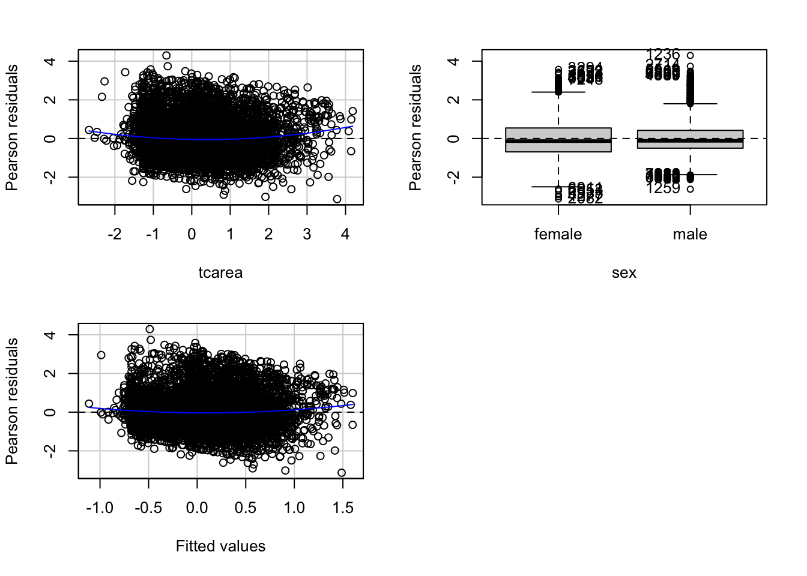
## Test stat Pr(>|Test stat|)
## tcarea 6.2571 4.123e-10 ***
## sex
## Tukey test 4.6065 4.094e-06 ***
## ---
## Signif. codes: 0 '***' 0.001 '**' 0.01 '*' 0.05 '.' 0.1 ' ' 1This function will produce plots of the Pearson residuals versus each of the predictors in the model and versus the fitted values.
9.2.0.1 Residuals vs predicted values
The most important of this is the last one, the scatterplot of the Pearson residuals versus the fitted values. In these plots one has to pay particular attention to nonlinear trends, trends in variations across the graph, but also isolated points. Ideally a plot of the residuals should show that:
- they’re pretty symmetrically distributed, tending to cluster towards the middle of the plot
- they’re clustered around the lower single digits of the y-axis (e.g., 0.5 or 1.5, not 30 or 150)
- in general there aren’t clear patterns
For example this is a good looking scatterplot of residuals vs fitted values:

On the other hand, if your plot isn’t evenly distributed vertically, or they have an outlier, or they have a clear shape to them, that indicates you can detect a clear pattern or trend in your residuals. In this case, then your model has room for improvement.
For example, these are scatterplots of residuals vs fitted values that indicate a problem:


How concerned should you be if your model isn’t perfect, if your residuals look a bit unhealthy? It’s up to you. Most of the time a decent model is better than none at all. So take your model, try to improve it, and then decide whether the accuracy is good enough to be useful for your purposes.
9.2.0.2 Residuals vs predictors
These plots are related to the homogeneity of variance assumption we introduced earlier.
When the predictor is categorical, we will see a collection of boxplots (one for each level in the predictor). A good fit will be indicated by boxplots that have the same centre and similar spread.
When the predictor is numeric, we see a scatterplot of the predictor against the Pearson residuals. Here we also look at any systematic differences in the spread of the residuals across the X axis. When the variances are not unequal you can often see a funnel form shaping up, with less variance at one end of the X axis than the other. Though other systematic patterns are also possible. You also need to pay attention to the shape of the red line printed in the output. This line should be straight. If you observe non-linearities (e.g., a curved line), this may be a more serious issue than the unequal spread and will need addressing.
9.2.0.3 Diagnostic
When you run the residualPlots() function R will also print two numerical tests.
First we have a curvature test for each of the plots by adding a quadratic term and testing the quadratic to be zero (more on this in a few sections). This is Tukey’s test for nonadditivity when plotting against fitted values. When this test is significant it may indicate a lack of fit for this particular predictor.
The Tukey test optimally should not be significant. We can see in the first of the three plots that the red line is a bit curved. It is this pattern that the printed tests are picking up.
9.2.0.4 Marginal plots
We can further diagnose the model by printing marginal model plots using the marginalModelPlots() function of the car package.
## Error in plot.window(...): need finite 'xlim' valuesThis will plot a scatterplot for each predictor variable against the response variable. This displays the conditional distribution of the response given each predictor, ignoring the other predictors. They are called marginal plots because they show the marginal relationship between the outcome and each predictor. It will also print a scatterplot of the response versus the fitted value displaying the conditional distribution of the outcome given the fit of the model. We observe here the curvature that was already identified by the previous plots (notice the blue line).
We can also use the marginalModelPlots() function to assess the homogeneity of variance assumption using the following argument:
## Warning in xy.coords(x, y, xlabel, ylabel, log): NAs introduced by coercion## Warning in min(x): no non-missing arguments to min; returning Inf## Warning in max(x): no non-missing arguments to max; returning -Inf## Error in plot.window(...): need finite 'xlim' values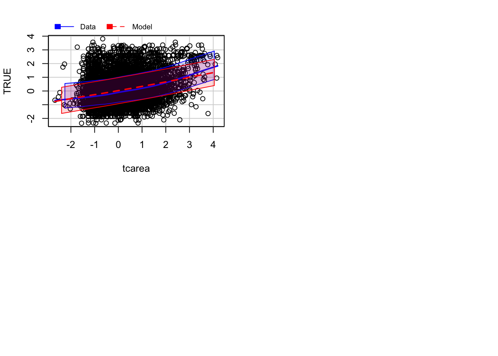
This will print the estimated standard deviation lines to the graph. You would want this to be constant across the X axis.
9.2.0.5 Diagnostic for homoskedasiticity
And since we are discussing homoskedasiticity (e.g., homogeneity of variance or constant/equal variance), it is worth pointing out that the car package implements a score test that evaluates whether the variance is constant. To obtain this test we use the ncvTest() function.
## Non-constant Variance Score Test
## Variance formula: ~ fitted.values
## Chisquare = 186.8947, Df = 1, p = < 2.22e-16When the test is significant, as it is here, we may suspect there is a problem with non-constant variance (also called heterokedasticity). In practice, should already be visible from the plot of residuals versus fits plot.
9.3 Checking for normality, outliers and influential data
As we said regression is quite robust to the non-normality of the errors, but it may be helpful to check it as a way to reinfore our overall assessment of the fit of the model. Typically, non-normal errors may be indicating that other (more serious) problems are present. You should look at these diagnostics in conjunction with all the others we have covered so far.
We are also interested in assessing the impact that extreme observations (outliers) may have in our results. There are different types of outliers. We are particularly concerned with those that will significantly affect our substantive conclusions (referred to as influential observations). Just keep in mind that outliers may be interesting in their own right and not necessarily bad data. Check this explanation of the various types of outliers you may encounter in regression before you proceed. You will see the “stattrek” site discusses outliers regarding X, in regression you typically are only concerned with outliers regarding Y. Here you can find a fuller explanation that I strongly recommend you read in order to more fully understand these concepts.
9.3.0.1 Density estimate of the residuals
We could plot the density estimate of the residuals:
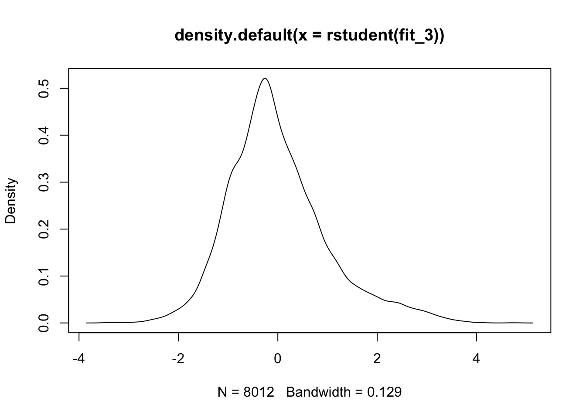
We can see that the right hand side tail is heavier than it should be.
9.3.0.2 qqplot
We could also use a normal probability plot to assess the normality of the residuals using the qqPlot() function of the car package;
qqPlot(fit_3, id.n = 3) #The id.n argument asks R to identify the row number for the most extreme observations, the value specifies how many cases we want to higlight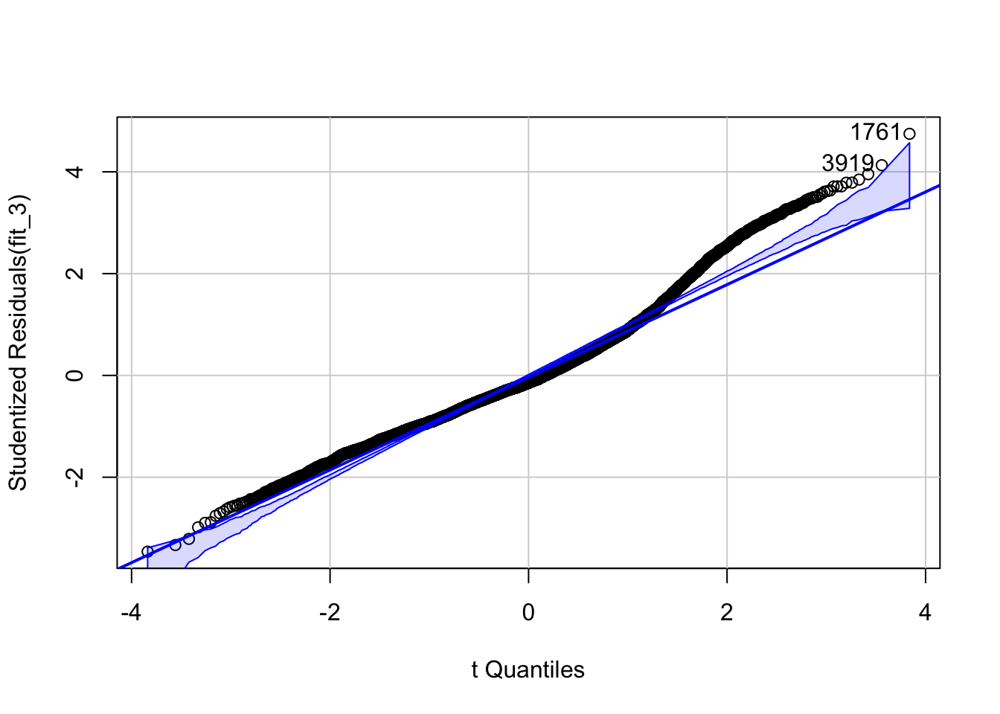
## [1] 1761 3919You have a few cases where the fitted values are much smaller than the observed values (thus the large positive residuals) particularly in the right hand side of the plot. As we saw in previous residual plots, there is a bit curvature in the data. It is likely this may be what this plot is picking up here.
9.3.0.3 Outliers
We can also run a formal test for outliers using the following function from the car package. This function locates the largest Studentised residuals in absolute value and computes a Bonferroni-corrected t test. If the probability value associated with this test is smaller than your alpha value, then you can conclude the observation you are dealing with is likely an outlier. Look at our results from using the function, what can you conclude?
## rstudent unadjusted p-value Bonferroni p
## 1761 4.746679 2.1037e-06 0.0168559.3.0.4 Influential cases
So far we have only been looking at outliers, but we can also obtain information about unusual cases that have large influence in our results (remember the distinction higlighted in the recommended reading material above). For identifying influential observations we can use visual methods. The influencePlot() function, also from the car package, produces a bubble plot, which combine measures of the residuals and other statistics (hat values and Cook distance) oriented to identify influential observations.
## Warning in plot.window(...): "id.n" is not a graphical parameter## Warning in plot.xy(xy, type, ...): "id.n" is not a graphical parameter## Warning in axis(side = side, at = at, labels = labels, ...): "id.n" is not a
## graphical parameter
## Warning in axis(side = side, at = at, labels = labels, ...): "id.n" is not a
## graphical parameter## Warning in box(...): "id.n" is not a graphical parameter## Warning in title(...): "id.n" is not a graphical parameter## Warning in plot.xy(xy.coords(x, y), type = type, ...): "id.n" is not a
## graphical parameter
## StudRes Hat CookD
## 1761 4.746679 0.0003234944 0.0024238163
## 3027 -3.462209 0.0020643297 0.0082540371
## 3420 2.918465 0.0014178636 0.0040274579
## 3919 4.130348 0.0003178580 0.0018044856
## 5917 1.093652 0.0024393741 0.0009749124
## 9549 1.566849 0.0024995094 0.0020501974We should be concerned by cases that are outlying (have a large residual), those will have very or very low score in the Y axis, and have high leverage as indicated by their hat value (are relatively far from the center of the regressor space), those will have high scores in the Y axis.
The size of the bubble gives you the Cook distance, which is a statistic that tries to summarise how much your regression coefficients may change without that particular case. Here we see that our only significant outlier (as diagnosed by the statistical test we run earlier) has fairly low leverage. There are a number of observations with more than twice the mean hat value (the first dashed line in the x axis) and three times the mean hat value (the second dashed line in the x axis).
We can compare the two models using the following code:
#This will rerun regression but without the case 1761 in our dataset and store the results in a new object
fit_3_no <- update(fit_3, subset = rownames(BCS0708) != 1761)
#The compareCoeff() function will print the coefficients for the two models and allow us to compare their magnitude and standard errors.
compareCoefs(fit_3, fit_3_no)## Calls:
## 1: lm(formula = tcviolent ~ tcarea + sex, data = BCS0708)
## 2: lm(formula = tcviolent ~ tcarea + sex, data = BCS0708, subset =
## rownames(BCS0708) != 1761)
##
## Model 1 Model 2
## (Intercept) 0.3134 0.3134
## SE 0.0139 0.0139
##
## tcarea 0.3104 0.3108
## SE 0.0103 0.0103
##
## sexmale -0.5968 -0.5979
## SE 0.0203 0.0202
## As you can see almost nothing changes. You should try to see what happens when you change the other two cases we have higlighted (the one with the largest leverage, 9549, and the one with the largest Cook Distance, 3027). If you were really concerned with influential observations you may want to consider some form of robust regression. For a tutorial on how to do this with R, check here.
It is important to realise that the absolute cutoffs discussed and the statistical tests mentioned for unusual data will often be more helpful with small datasets. With large samples absolute cutoffs for measures of influence are unlikely to identify noteworthy observations.
9.4 Dealing with non linearities (and unequal variances)
The diagnostics we have carried out so far suggest that perhaps we had a problem with non-linearities regarding the relationship between fear of violent crime and perceptions of antisocial behaviour. The residual plots seem to indicate that the model we fitted underpredict at low and high levels of perceptions of antisocial behaviour. Let’s look back at the marginal relationship between these two variables through a scatterplot.
As we said one of the fundamental assumptions of regression is that the model assumes that a straight line is a good representation of the data. If this is not the case you may better off using some form of nonlinear model. So, one of the first things you want to do when looking at your data is to assess if a straight line represents a reasonable summary for it. Let’s go back to the first simple model we explored and plot the smoothed conditional means
## Warning: Using `size` aesthetic for lines was deprecated in ggplot2 3.4.0.
## ℹ Please use `linewidth` instead.
## This warning is displayed once every 8 hours.
## Call `lifecycle::last_lifecycle_warnings()` to see where this warning was
## generated.## Warning in geom_line(data = BCS0708, aes(x = round(tcarea/0.1) * 0.1, y =
## tcviolent), : Ignoring unknown parameters: `fun.y`## `geom_smooth()` using formula = 'y ~ x'## Warning: Removed 3664 rows containing non-finite values (`stat_smooth()`).## Warning: Removed 3664 rows containing non-finite values (`stat_summary()`).## No summary function supplied, defaulting to `mean_se()`## Warning: Removed 3664 rows containing missing values (`geom_point()`).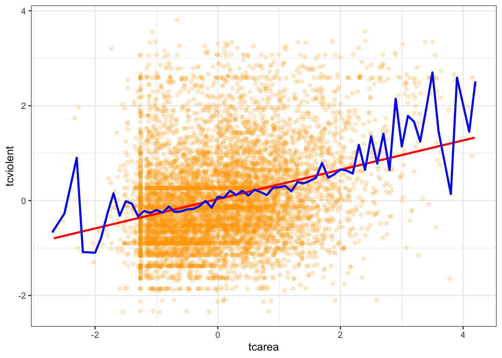
Is the straight line a good summary? One way of exploring this when you only have one predictor is to use a Loess regression line. This form of local regression subsets chunks of data around your X axis to try to estimate a regression line that fits well a region of the data. These are the blue lines that you see plotted in the residual plots earlier. This visualisation posted online in the wonderful Simply Statistics blog.

ggplot(data = BCS0708, aes(x = tcarea, y = tcviolent)) +
geom_point(alpha = .2, position = "jitter", color ="orange") +
geom_smooth(method = "lm", color = "red", size = 1) +
geom_smooth() +
theme_bw()## `geom_smooth()` using formula = 'y ~ x'## Warning: Removed 3664 rows containing non-finite values (`stat_smooth()`).## `geom_smooth()` using method = 'gam' and formula = 'y ~ s(x, bs = "cs")'## Warning: Removed 3664 rows containing non-finite values (`stat_smooth()`).## Warning: Removed 3664 rows containing missing values (`geom_point()`).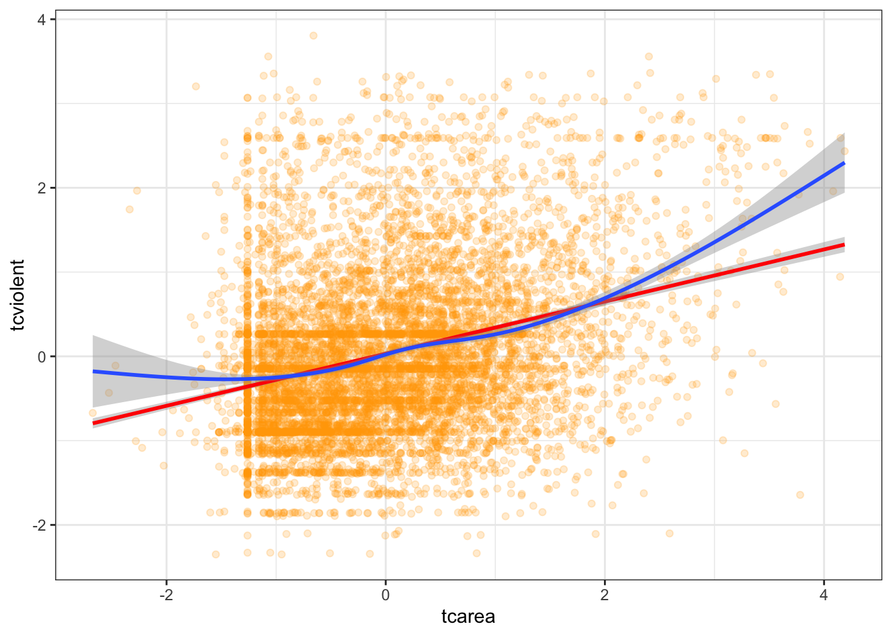
We already knew from the residual plots we had a problem here, but hopefully this plots also helps you to see the problem more clearly. This plot seems to suggest that perhaps the relationship here is somehow curvilinear, although notice that the curvature takes place as the result of the underprediction in the regions of X with sparser data.
9.4.0.1 Using polynomial regression
What do you do in a situation such as this? There are a number of solutions, some of which are more complex than others. One fairly simple way of extending the linear model is by using polynomial regression. Essentially what this does is to incorporate a transformed predictor into the model with the intention of capturing the curvature apparent in the data. What we do is that we add additional terms to the model until we are satisfied we capture the pattern in the data.
So say we are working with a simple model of tcviolent ~ tcarea. We could try to fit a polynomial regression adding a second term with a squared tcarea. This would produce the following predicted line:
#Notice the arguments in the first geom_smooth(). We are asking ggplot to produce a linear model using the specified formula. This formula asks for a polynomial regression with a quadratic term added (that's why you see the 2). You may want to look at the help files for the poly() function, which is one of the ways of inserting polynomials in a R formula (the preferred way of doing it if you want to have more than a quadratic term).
ggplot(data = BCS0708, aes(x = tcarea, y = tcviolent)) +
geom_point(alpha = .2, position = "jitter", color ="orange") +
geom_smooth(method = "lm", formula = y ~ poly(x, 2), color = "red", size = 1, se=FALSE) +
geom_smooth(se=FALSE) +
theme_bw()## Warning: Removed 3664 rows containing non-finite values (`stat_smooth()`).## `geom_smooth()` using method = 'gam' and formula = 'y ~ s(x, bs = "cs")'## Warning: Removed 3664 rows containing non-finite values (`stat_smooth()`).## Warning: Removed 3664 rows containing missing values (`geom_point()`).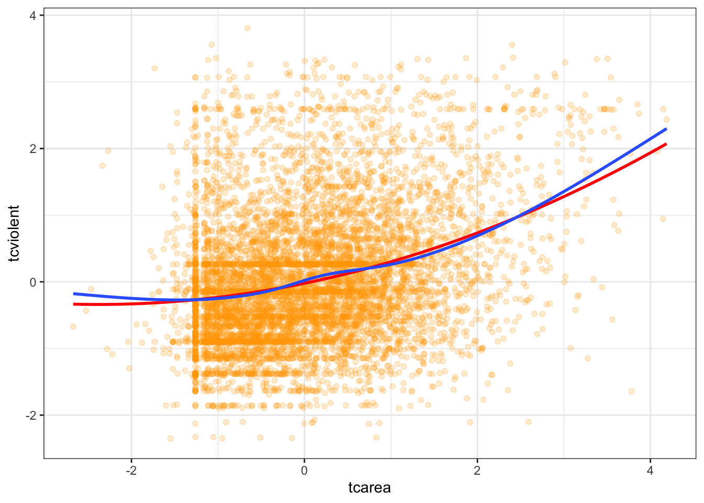
Essentially, adding this extra term allows the possibility of increasing slopes with tcarea and helps to model U-shaped patterns. If we still think that the non-linearities are not adequately captured we could try with a cubic transformation (raising to the power of 3) and adding this additional term. The more complex your polynomial, the more difficult may be to interpret your tabular results.
Another thing to note is that the higher order polyomial you add, the better your model fits. However that doesn’t necessarily mean that it is a better model. You might venture into what is known as overfitting, where your model fits your data greatly, but uses its predictive power. See this paper by Lever et al. in Nature to learn more.
Let’s return to the more complex model we were examining and rerun the model with a quadratic term added. When including quadratic terms as part of a formula in R we need to use the I()function for converting objects (or the poly() function).
##
## Call:
## lm(formula = tcviolent ~ tcarea + I(tcarea^2) + sex, data = BCS0708)
##
## Residuals:
## Min 1Q Median 3Q Max
## -3.6267 -0.5840 -0.1253 0.4740 4.2919
##
## Coefficients:
## Estimate Std. Error t value Pr(>|t|)
## (Intercept) 0.265422 0.015870 16.725 < 2e-16 ***
## tcarea 0.273647 0.011811 23.169 < 2e-16 ***
## I(tcarea^2) 0.047727 0.007628 6.257 4.12e-10 ***
## sexmale -0.592218 0.020238 -29.263 < 2e-16 ***
## ---
## Signif. codes: 0 '***' 0.001 '**' 0.01 '*' 0.05 '.' 0.1 ' ' 1
##
## Residual standard error: 0.9037 on 8008 degrees of freedom
## (3664 observations deleted due to missingness)
## Multiple R-squared: 0.1852, Adjusted R-squared: 0.1849
## F-statistic: 606.8 on 3 and 8008 DF, p-value: < 2.2e-16The near-zero p-value associated with the quadratic term suggests that it leads to an improved model. We can use the anova() function to quantify the improvement in the model.
## Analysis of Variance Table
##
## Model 1: tcviolent ~ tcarea + sex
## Model 2: tcviolent ~ tcarea + I(tcarea^2) + sex
## Res.Df RSS Df Sum of Sq F Pr(>F)
## 1 8009 6572.4
## 2 8008 6540.4 1 31.976 39.151 4.123e-10 ***
## ---
## Signif. codes: 0 '***' 0.001 '**' 0.01 '*' 0.05 '.' 0.1 ' ' 1In the output the first model is the one without the quadratic term (the straight line model) and the second model is the one with the added polynomial. What the anova() function is doing here is to run a hypothesis test that the two models fit the data equally well, whereas the research hypothesis is that the model with the quadratic term represents a better fit. The p value we observe is virtually zero. So clearly in this case adding a quadratic term represents an improvement to our model. If we compare the plot of the residuals against the fitted values we can see that the non-linear pattern that was evident in our simpler model washes away once we introduce the quadratic term.
#You would use this code to obtain only the fitted against the residuals.
residualPlots(fit_3, ~1, fitted = TRUE)
## Test stat Pr(>|Test stat|)
## Tukey test 4.6065 4.094e-06 ***
## ---
## Signif. codes: 0 '***' 0.001 '**' 0.01 '*' 0.05 '.' 0.1 ' ' 1
## Test stat Pr(>|Test stat|)
## Tukey test 1.2223 0.2216
## Test stat Pr(>|Test stat|)
## tcarea -0.3529 0.72420
## I(tcarea^2) 1.8972 0.05783 .
## sex
## Tukey test 1.2223 0.22159
## ---
## Signif. codes: 0 '***' 0.001 '**' 0.01 '*' 0.05 '.' 0.1 ' ' 1We can run the tests we used before to check for fit:
## Test stat Pr(>|Test stat|)
## tcarea -0.3529 0.72420
## I(tcarea^2) 1.8972 0.05783 .
## sex
## Tukey test 1.2223 0.22159
## ---
## Signif. codes: 0 '***' 0.001 '**' 0.01 '*' 0.05 '.' 0.1 ' ' 1We can see that the tests are no longer significant. Should we add a cubic term? The Loess line was not a simple curve, would a more complex model be required?
##
## Call:
## lm(formula = tcviolent ~ tcarea + I(tcarea^2) + I(tcarea^3) +
## sex, data = BCS0708)
##
## Residuals:
## Min 1Q Median 3Q Max
## -3.7352 -0.5846 -0.1276 0.4733 4.2846
##
## Coefficients:
## Estimate Std. Error t value Pr(>|t|)
## (Intercept) 0.272535 0.017115 15.924 < 2e-16 ***
## tcarea 0.263588 0.014888 17.705 < 2e-16 ***
## I(tcarea^2) 0.035936 0.013078 2.748 0.00601 **
## I(tcarea^3) 0.005696 0.005132 1.110 0.26708
## sexmale -0.591906 0.020239 -29.245 < 2e-16 ***
## ---
## Signif. codes: 0 '***' 0.001 '**' 0.01 '*' 0.05 '.' 0.1 ' ' 1
##
## Residual standard error: 0.9037 on 8007 degrees of freedom
## (3664 observations deleted due to missingness)
## Multiple R-squared: 0.1853, Adjusted R-squared: 0.1849
## F-statistic: 455.4 on 4 and 8007 DF, p-value: < 2.2e-16In this case, we have less evidence that adding this additional term would improve the fit. As you can see the p value associated with the cubic term is not significant.
As we discussed when introducing regression interpreting the coefficients can get tricky. That is certainly the case when you add polynomial regression. The description of results in this case will typically focus on the general pattern of results, rather than in the regression coefficients for your transformed variable. One solution to this is to produce graphical displays of the relationship such as those that can be obtained with the effects package.
## lattice theme set by effectsTheme()
## See ?effectsTheme for details.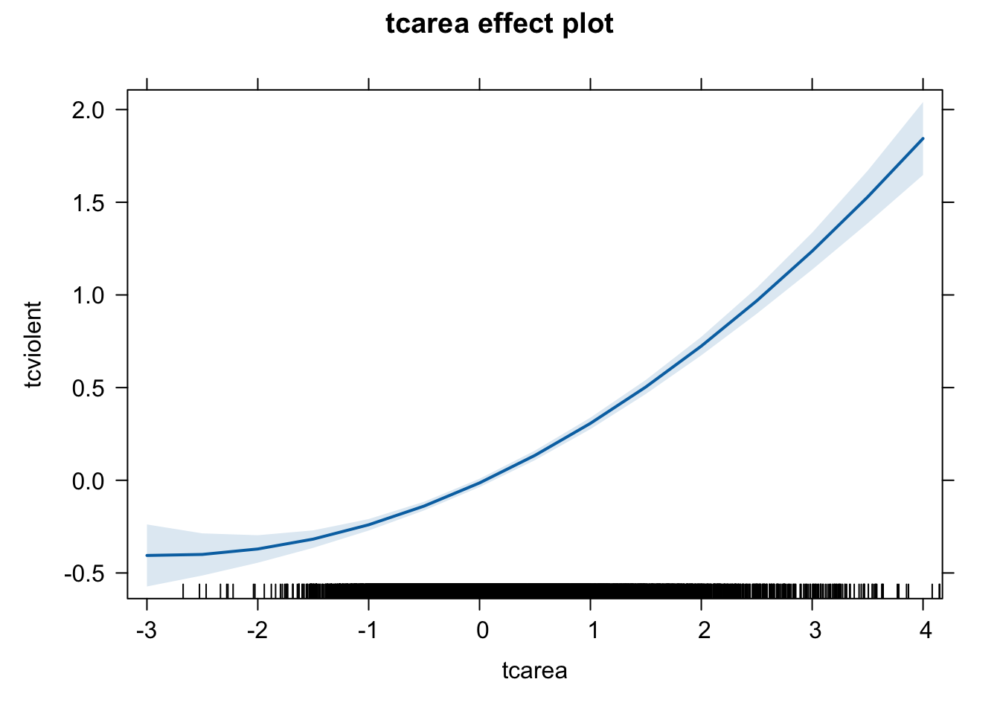
We have discussed transforming the variable by squaring it, but other curvilinear patterns may require other transformations such as taking the inverse (1/X), when there is a decreasing negative effect of the predictor on the response variable, or taking the square root of X, when there is a dminishing positive impact of the predictor on the response variable -refer to Weisburt and Britt, 2014: 516-518. There are also other more sophisticated ways of accommodating non linearities -by means of fitting regression splines or using generalised additive models. But those models are well beyond the scope of this course.
9.5 Transformations and unequal variance
You may have noticed in the residual plot for our polynomial regression that the variance does not seem constant in this case. Again, there are a number of solutions one could apply in this type of scenarios. One possibility is to replace the usual coefficient standard errors with standard errors that will be consistent even with heterokedasticity.
##
## Attaching package: 'zoo'## The following objects are masked from 'package:base':
##
## as.Date, as.Date.numeric##
## arm (Version 1.13-1, built: 2022-8-25)## Working directory is /Users/eonkim/Desktop/R/CrimeSciData##
## Attaching package: 'arm'## The following object is masked from 'package:car':
##
## logit##
## t test of coefficients:
##
## Estimate Std. Error t value Pr(>|t|)
## (Intercept) 0.2654218 0.0170871 15.5334 < 2.2e-16 ***
## tcarea 0.2736472 0.0120168 22.7721 < 2.2e-16 ***
## I(tcarea^2) 0.0477268 0.0087201 5.4732 4.553e-08 ***
## sexmale -0.5922181 0.0200261 -29.5724 < 2.2e-16 ***
## ---
## Signif. codes: 0 '***' 0.001 '**' 0.01 '*' 0.05 '.' 0.1 ' ' 1## lm(formula = tcviolent ~ tcarea + I(tcarea^2) + sex, data = BCS0708)
## coef.est coef.se
## (Intercept) 0.2654 0.0159
## tcarea 0.2736 0.0118
## I(tcarea^2) 0.0477 0.0076
## sexmale -0.5922 0.0202
## ---
## n = 8012, k = 4
## residual sd = 0.9037, R-Squared = 0.19You will see the standard errors are marginally larger but nothing else changes in this case.
Let’s look at another example using the Boston dataset. We will model crime as a linear function of property values (medv), lower status of the population (lstat), distances to employment centres (dis), and a binary input indicating proximity to the river (chas).
##
## Call:
## lm(formula = crim ~ medv + lstat + dis + chas, data = Boston)
##
## Residuals:
## Min 1Q Median 3Q Max
## -12.030 -3.104 -1.102 1.686 79.947
##
## Coefficients:
## Estimate Std. Error t value Pr(>|t|)
## (Intercept) 7.49610 2.43009 3.085 0.002150 **
## medv -0.15261 0.05545 -2.752 0.006130 **
## lstat 0.26042 0.07851 3.317 0.000976 ***
## dis -0.96116 0.18657 -5.152 3.72e-07 ***
## chas -1.31968 1.34461 -0.981 0.326842
## ---
## Signif. codes: 0 '***' 0.001 '**' 0.01 '*' 0.05 '.' 0.1 ' ' 1
##
## Residual standard error: 7.462 on 501 degrees of freedom
## Multiple R-squared: 0.2534, Adjusted R-squared: 0.2474
## F-statistic: 42.51 on 4 and 501 DF, p-value: < 2.2e-16We see that the R square is not too bad at .24 and three of the inputs are significantly associated with crime in the direction one would expect. Areas with more expensive properties and closer to employment centres tend to have less crime, and areas with a greater proportion of lower status residents tend to have more crime. Let’s have a look at the residuals.
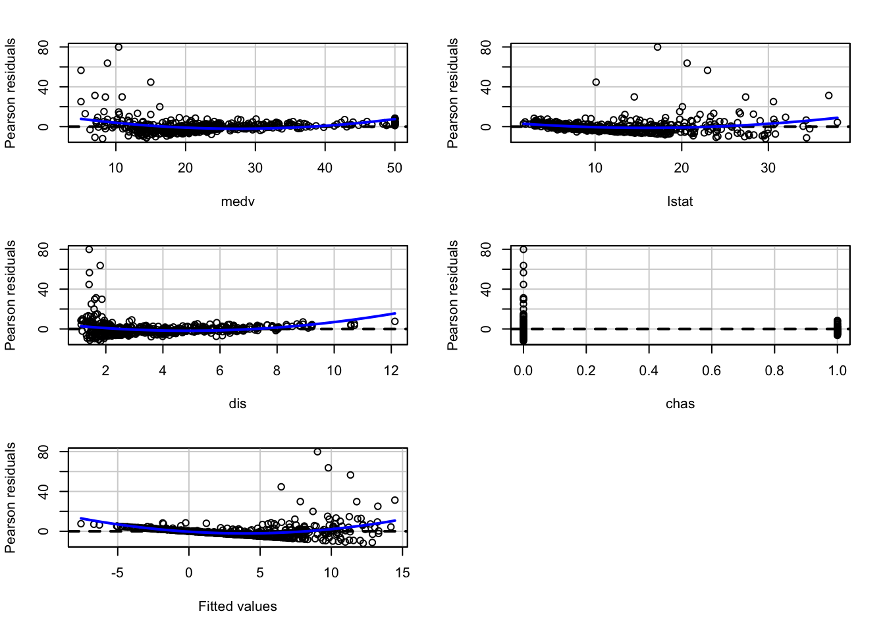
## Test stat Pr(>|Test stat|)
## medv 9.8302 < 2.2e-16 ***
## lstat 4.8810 1.422e-06 ***
## dis 5.7387 1.655e-08 ***
## chas 0.3195 0.7495
## Tukey test 10.2705 < 2.2e-16 ***
## ---
## Signif. codes: 0 '***' 0.001 '**' 0.01 '*' 0.05 '.' 0.1 ' ' 1We can see non-linearities and quite obvious unequal variances.
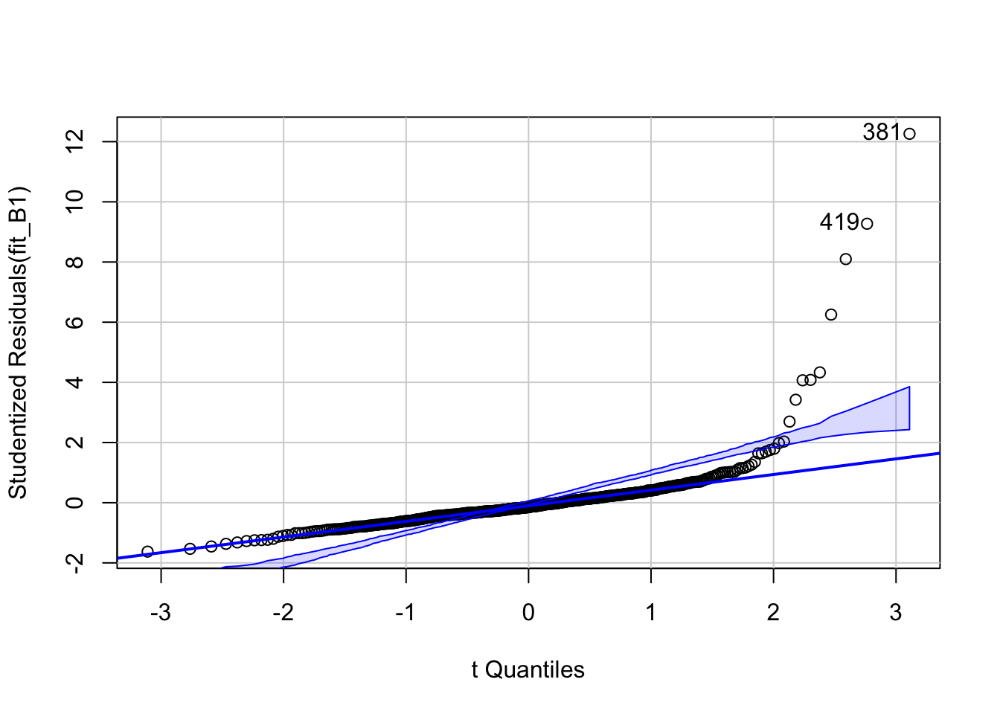
## [1] 381 419The qqplot shows a clear skew in the residuals. And if we were to look at outliers we would also see problems.
## rstudent unadjusted p-value Bonferroni p
## 381 12.261038 2.1183e-30 1.0719e-27
## 419 9.272410 5.4493e-19 2.7573e-16
## 406 8.096815 4.3344e-15 2.1932e-12
## 411 6.252293 8.6804e-10 4.3923e-07
## 415 4.331682 1.7891e-05 9.0527e-03
## 428 4.081649 5.2049e-05 2.6337e-02
## 405 4.068951 5.4871e-05 2.7765e-02Quite a few of the outliers are significant and the influence plot shows further evidence of it:
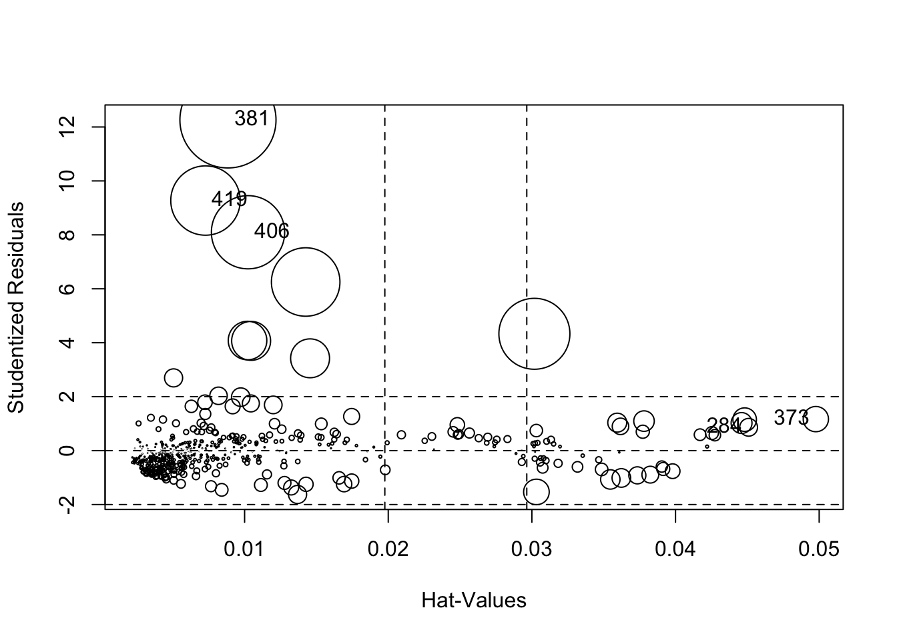
## StudRes Hat CookD
## 284 0.8641468 0.045088797 0.007055541
## 373 1.1682560 0.049768556 0.014286161
## 381 12.2610377 0.008840861 0.206603429
## 406 8.0968152 0.010238469 0.120149835
## 419 9.2724104 0.007275786 0.107751496What this analysis shows is that often problems come together and are related to each other. If you remember from week 2, the distribution of crime is highly skewed. In these cases it can make sense to transform the Y variable as a first step, since this skew is surely playing a role in the unequal spread that we see in the residual plots.
We can use the symbox() function to investigate what transformation will make crim less skewed.

This set of boxplots suggests what the distribution of crim would look like if we were to apply different transformations. In this case, as in many other instances with skewed distributions, applying the logarithmic transformation seems the most appropriate one. Let’s explore the implications of it:
##
## Call:
## lm(formula = log(crim) ~ medv + lstat + dis + chas, data = Boston)
##
## Residuals:
## Min 1Q Median 3Q Max
## -3.6978 -1.0714 0.0511 1.0719 3.8100
##
## Coefficients:
## Estimate Std. Error t value Pr(>|t|)
## (Intercept) 0.70156 0.45774 1.533 0.12599
## medv -0.02745 0.01044 -2.629 0.00883 **
## lstat 0.08746 0.01479 5.914 6.17e-09 ***
## dis -0.52131 0.03514 -14.834 < 2e-16 ***
## chas 0.12079 0.25328 0.477 0.63364
## ---
## Signif. codes: 0 '***' 0.001 '**' 0.01 '*' 0.05 '.' 0.1 ' ' 1
##
## Residual standard error: 1.406 on 501 degrees of freedom
## Multiple R-squared: 0.5807, Adjusted R-squared: 0.5774
## F-statistic: 173.5 on 4 and 501 DF, p-value: < 2.2e-16You will notice that the coefficients change in magnitude, since we have re-expressed the response variable in the logarithmic scale, but the direction and the statistical significance remain unchanged. The R square, however, is now much better. Let’s look at the residuals:
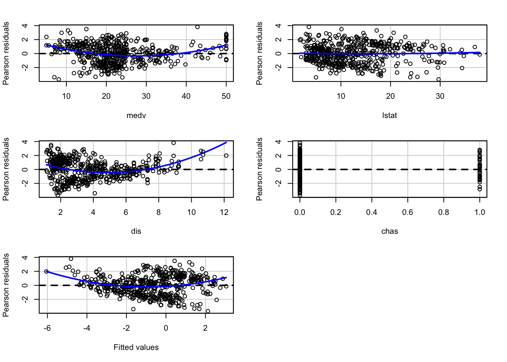
## Test stat Pr(>|Test stat|)
## medv 8.0190 7.613e-15 ***
## lstat 0.4771 0.6335
## dis 7.7327 5.838e-14 ***
## chas 0.2330 0.8158
## Tukey test 6.0272 1.668e-09 ***
## ---
## Signif. codes: 0 '***' 0.001 '**' 0.01 '*' 0.05 '.' 0.1 ' ' 1We can see that the non-constant variance is still present, though to a lesser degree, and we can now also see that the non-linearities persist. We can further investigate this model using a scatterplot matrix. In fact, this should typically preceed fitting the model to assess potential non-linearities. We will use the scatterplotMatrix of the car package.
## Warning in smoother(x[subs], y[subs], col = smoother.args$col[i], log.x =
## FALSE, : could not fit smooth
## Warning in smoother(x[subs], y[subs], col = smoother.args$col[i], log.x =
## FALSE, : could not fit smooth
## Warning in smoother(x[subs], y[subs], col = smoother.args$col[i], log.x =
## FALSE, : could not fit smooth
## Warning in smoother(x[subs], y[subs], col = smoother.args$col[i], log.x =
## FALSE, : could not fit smooth
The matrix reveals that the distribution of the nummerical predictors are all also suffering from some skew and display a curvilinear relationship with the response variable.
fit_B3 <- lm(log(crim) ~ poly(medv, 2) + log(lstat) + log(dis) + chas, data = Boston)
summary(fit_B3)##
## Call:
## lm(formula = log(crim) ~ poly(medv, 2) + log(lstat) + log(dis) +
## chas, data = Boston)
##
## Residuals:
## Min 1Q Median 3Q Max
## -4.5307 -0.9095 0.1236 0.8464 3.2641
##
## Coefficients:
## Estimate Std. Error t value Pr(>|t|)
## (Intercept) 1.1206 0.5491 2.041 0.0418 *
## poly(medv, 2)1 -11.9003 2.3688 -5.024 7.07e-07 ***
## poly(medv, 2)2 10.8617 1.4738 7.370 7.11e-13 ***
## log(lstat) 0.2556 0.1923 1.329 0.1843
## log(dis) -2.1193 0.1398 -15.156 < 2e-16 ***
## chas 0.1537 0.2297 0.669 0.5035
## ---
## Signif. codes: 0 '***' 0.001 '**' 0.01 '*' 0.05 '.' 0.1 ' ' 1
##
## Residual standard error: 1.274 on 500 degrees of freedom
## Multiple R-squared: 0.656, Adjusted R-squared: 0.6526
## F-statistic: 190.7 on 5 and 500 DF, p-value: < 2.2e-16Transforming the lstat and dis variable in the logarithmic scale14 and allowing a quadratic term for median property value seems to increase the R square and improve the fit of the model.
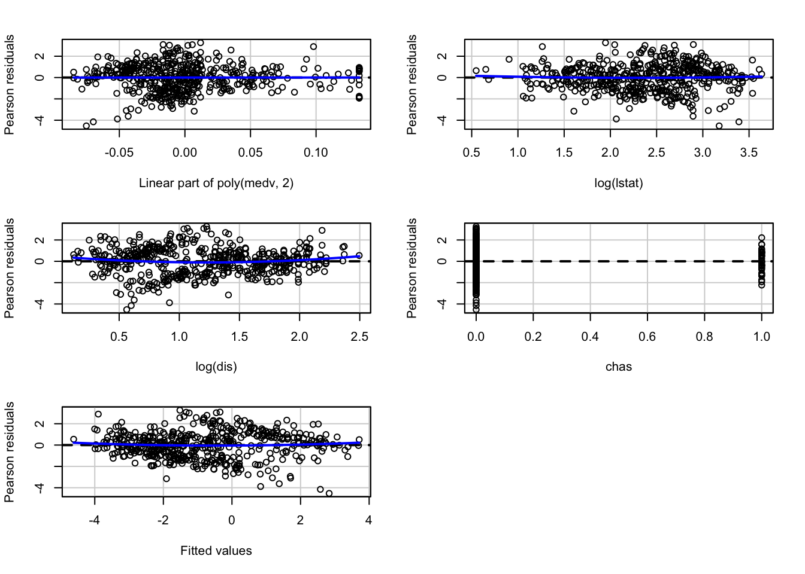
## Test stat Pr(>|Test stat|)
## poly(medv, 2)
## log(lstat) 0.5714 0.56801
## log(dis) 1.9410 0.05282 .
## chas 0.3017 0.76303
## Tukey test 1.1169 0.26402
## ---
## Signif. codes: 0 '***' 0.001 '**' 0.01 '*' 0.05 '.' 0.1 ' ' 1Although we still have some issues with unequal spread, the outputs do not lead us to alter our substantive conclusions.
coeftest(fit_B3, vcov = hccm) #The vcov is providing a covariance matrix that is corrected for heteroskedasticity.##
## t test of coefficients:
##
## Estimate Std. Error t value Pr(>|t|)
## (Intercept) 1.12062 0.54230 2.0664 0.0393 *
## poly(medv, 2)1 -11.90029 2.43779 -4.8816 1.418e-06 ***
## poly(medv, 2)2 10.86169 1.61947 6.7069 5.390e-11 ***
## log(lstat) 0.25564 0.19310 1.3238 0.1862
## log(dis) -2.11930 0.13050 -16.2402 < 2.2e-16 ***
## chas 0.15374 0.20064 0.7663 0.4439
## ---
## Signif. codes: 0 '***' 0.001 '**' 0.01 '*' 0.05 '.' 0.1 ' ' 1As you can see it is more productive “to make a model fit step by step (e.g., transformation estimation) than to postulate a simple model and find out what went wrong” (Harrell, 2001: ix). It is an iterative process that requires practice.
9.6 Boostrapping regression models
As we discussed in previous sessions, bootstrapping is an approach to statistical inference that is based on building a “resampling” distribution from the observed sample. This approach allow us to obtain distribution-free confidence intervals and some of the bootstrap approaches are also helpful when other assumptions of the model are violated. For more details about this topic you may want to read Fox and Weisber (2012) online appendix. Here we are going to illustrated boostrapping with observation resampling.
We can use the Boot() function that comes with the car package for this.
fit_B3_boot <- Boot(fit_B3, f=coef, R=999, method="case") #This will take our latest model for the Boston data, will run 999 resamples of the cases, and will resample the coefficients (you could resample other quantitites)
summary(fit_B3_boot)##
## Number of bootstrap replications R = 999
## original bootBias bootSE bootMed
## (Intercept) 1.12062 -0.0103797 0.54260 1.10022
## poly(medv, 2)1 -11.90029 -0.0137443 2.38281 -11.83298
## poly(medv, 2)2 10.86169 0.0650774 1.60768 10.94070
## log(lstat) 0.25564 0.0022354 0.19166 0.26229
## log(dis) -2.11930 0.0049542 0.12834 -2.11582
## chas 0.15374 0.0010373 0.19310 0.15380The summary gives the original sample value for each component of the bootstrapped statistics, along with the bootstrap estimates of bias, the difference between the average bootstrapped value of the statistic and its original-sample value. The bootstrap estimates of standard error are computed as the standard deviation of the bootstrap replicates.
Confidence intervals using various methods can be applied to this object:
## Bootstrap bca confidence intervals
##
## 2.5 % 97.5 %
## (Intercept) 0.01353137 2.1183307
## poly(medv, 2)1 -16.42654988 -7.3626855
## poly(medv, 2)2 7.57298828 13.9793073
## log(lstat) -0.11032319 0.6372392
## log(dis) -2.37733389 -1.8784905
## chas -0.22771982 0.54049029.7 Multicollinearity
The regression model may experience some problems where there is strong collinearity, when the predictors are related among themselves. In these scenarios, the standard errors for the coefficients will be large and the confidence intervals will also be broader. The power of the hypothesis test for our t statistic will be lower. That is, it will be more difficult to detect a significant relationship even if there is one.
To diagnose multicollinearity a first step may be to observe the correlation between the predictors in the model. Let’s first subset the data to only obtain the relevant predictors and our main outcome. For this I will introduce another form of selecting columns in a dataframe using the dplyr package.
library(dplyr, quietly=TRUE, warn.conflict=FALSE)
Boston_R <- select(Boston, crim, lstat, dis, chas, medv)Then we can obtain the correlations using the cor() function.
## crim lstat dis chas medv
## crim 1.00000000 0.4556215 -0.37967009 -0.05589158 -0.3883046
## lstat 0.45562148 1.0000000 -0.49699583 -0.05392930 -0.7376627
## dis -0.37967009 -0.4969958 1.00000000 -0.09917578 0.2499287
## chas -0.05589158 -0.0539293 -0.09917578 1.00000000 0.1752602
## medv -0.38830461 -0.7376627 0.24992873 0.17526018 1.0000000And then we can visualise these correlations with the corrplot package.
## corrplot 0.92 loaded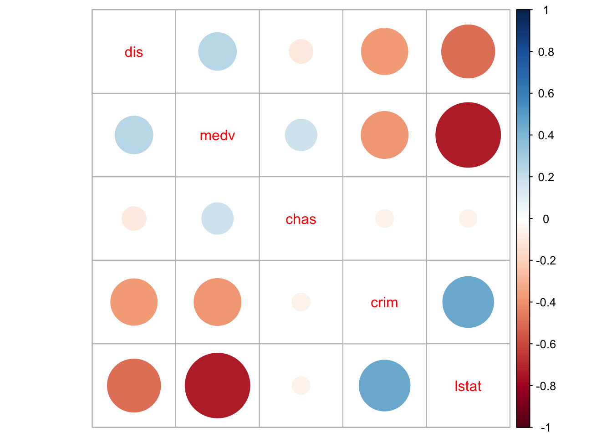
We can see that there are some non-trivial correlations between some of the predictors, in particular between median property value and percent lower status (r=-73). And keep in mind these coefficients are not picking up well enough the actual curvilinear relation that we saw in the scatterplot matrix printed earlier.
Correlations among pairs of variables, will only give you a first impression of the problem. What we are really concerned is what happens once you throw all the variables in the model. Not all problems with multicollinearity will be detected by the correlation matrix. The recommended reading describes the variance inflation factor as a tool to diagnose multicollinearity. Let’s look at the on we obtain with the first model (pre-transformations) that we run with the Boston dataset:
## medv lstat dis chas
## 2.358517 2.850675 1.399747 1.057865Typically a VIF larger than 5 or 10 indicates serious problems wiht collinearity. Fox (2008) recommends using the square root of the variance inflation factor:
## medv lstat dis chas
## 1.535746 1.688394 1.183109 1.028525Typically, it is assumed that you need a value greater than 2 for the square root of the variance inflation factor before collinearity seriously impairs the precision of the estimation. It does not look as if we would have to worry much on the basis of these results.
When you have a set of related inputs or regressors (either because you have a multicategory factor and various dummy variables or because you have polynomial regressors) you cannot use the variance inflation factor. There is, however, a similar statistics that you can use in these contexts: the generalised variance inflation factor. We could use this measure for the final model we used for the Boston data. We invoke this statistic using the same code as before:
## GVIF Df GVIF^(1/(2*Df))
## poly(medv, 2) 4.439803 2 1.451580
## log(lstat) 4.151409 1 2.037501
## log(dis) 1.770096 1 1.330450
## chas 1.058015 1 1.028599Now that we are using the transformed variables it looks as if we have more of an issue with the coefficient for lstat. The confidence interval for this coefficient is about 2 times larger than it would be without collinearity, which goes a long way towards explaining why it is not longer significant.
The problem with collinear inputs is that they do not add much new to the model. Non-collinearity is not an assumption of the regression model. And everything is related to everything else, to some extent at least. But if a predictor is strongly related to some other input, then we are simply adding redundant information to the model. If you are developing a risk assessment tool for probation, you don’t want to add loads of predictors that are highly correlated (for this simply is requiring probation to collect redundant information). Also, in these situations is hard to tell apart the relative importance of the collinear predictors (if you are interested in explanation rather than prediction). It can be difficult to separate their effects.
There are a number of proposed solutions to multicollinearity, from dropping the culprits to creating composite variables that summarise variation among the correlated inputs, to more complex techniques, but all these are well beyond the aims of this course.
It is very important, however, to remember that there are some circunstances in which multicollinearity can be safely ignored. Professor Paul Allison discusses this issue in his blog and you may want to check the full discussion. Essentially, Prof. Allison argues that one can ignore multicollinearity when:
“The variables with high VIFs are control variables, and the variables of interest do not have high VIFs… In this case the coefficients of the variables of interest are not affected, and the performance of the control variables as controls is not impaired.”
“The high VIFs are caused by the inclusion of powers or products of other variables. If you specify a regression model with both x and x2, there’s a good chance that those two variables will be highly correlated. Similarly, if your model has x, z, and xz, both x and z are likely to be highly correlated with their product. This is not something to be concerned about, however, because the p-value for xz is not affected by the multicollinearity…”
“The variables with high VIFs are indicator (dummy) variables that represent a categorical variable with three or more categories. If the proportion of cases in the reference category is small, the indicator variables will necessarily have high VIFs, even if the categorical variable is not associated with other variables in the regression model.”
“If the log transformation is applied to an input variable as well as the outcome the coefficient can be interpreted as the expected proportional change in Y per proportional chance in X” (Gelman and Hill, 2007). I strongly recommend you read this for further aid in interpreting coefficients when you have used log transformations.↩︎